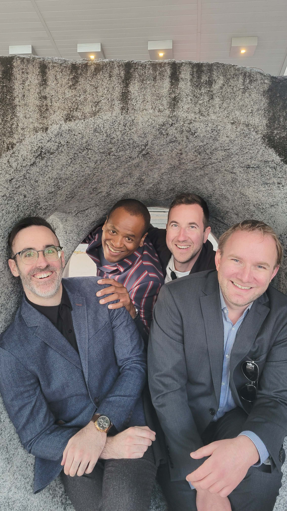

The High Tide
The High Tide is a band based in Saint John, NB, Canada, serving up hot covers and new music inspired by 60's soul!


We are:
- Damon Levine (organ, guitar, vox)
- Scott Dincorn (drums, vox)
- Ian Wiseman (percussion, vox)
- Andy Lilly (bass, vox)